Summoner
Appearances: FF3, FF4, FF5, FF9, FF10, FF11, FFT, FFTA, FFTA2
Aliases: Conjurer
Summoners add the most flavor to Final Fantasy. Instead of fighting for themselves, they summon giant monsters to either fight for them or support the party at the cost of time, MP, or something else. This makes them effective for boss battles, but overkill on regular monsters, so they tend not to get used enough to level up. Recently games have been adding a sub-job onto Summoners (such as White Mage) to make them more effective. They typically wear robes, equip staffs and rods, and are often portrayed with horns.
Similar Job Classes: Beastmaster, White Mage
Expand All Images | Collapse All Images
| FF3 |
| 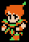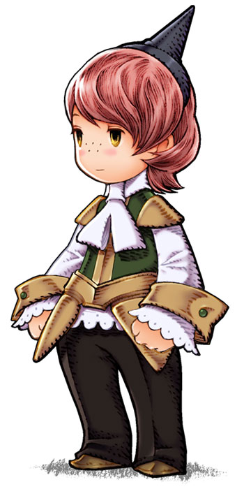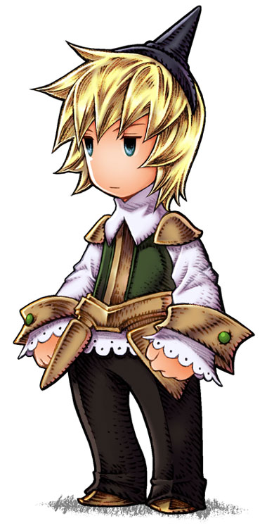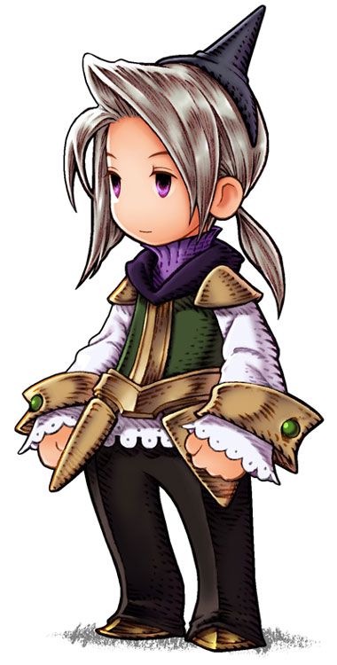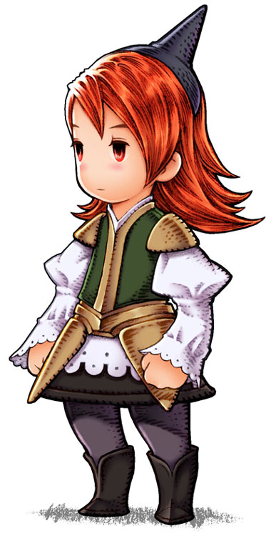 |
| NAME: Conjurer (FF3) / Evoker (FF3DS) |
| OVERVIEW: Conjurer evolves into Summoner. Summons have three effects that each can do, chosen at random. Conjurer can only have the two weakest effects activate. Summoner has all three. Conjurer has these summons available: Chocb, Shiva, Ramuh, Ifrit, Titan, Odin, Levia, Baham |
| OVERVIEW: Evolves into Summoner. |
| WEAPONS: Mithril Rod, Ice Rod, Fire Rod, Light Rod |
ABILITIES/MAGIC:
Fight - Attack with equipped weapon
Magic - Cast magic spell
Defend - Increase defense for one turn
Item - Use an item from inventory
| ATTRIBUTES: High strength, high magic, low HP |
|
|
| FF3 |
| 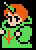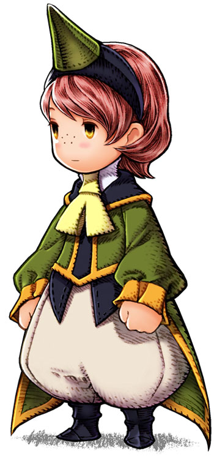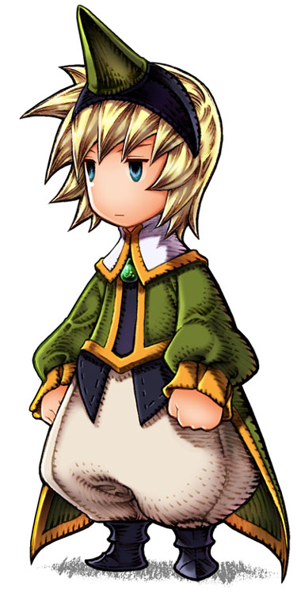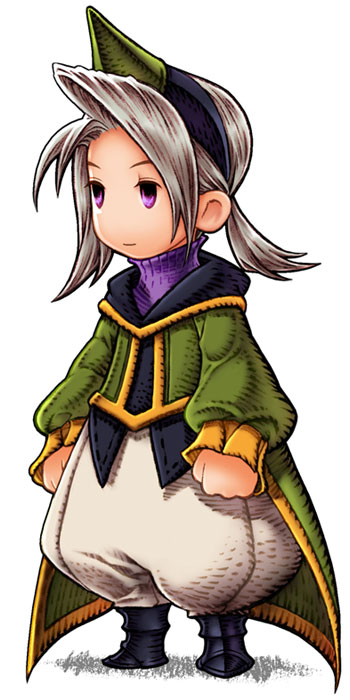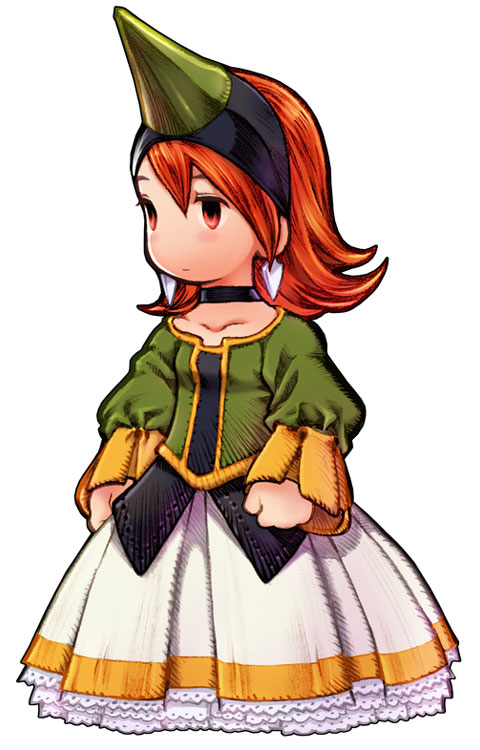 |
| NAME: Summoner |
| OVERVIEW: Summoner evolves from Conjurer. Summons have three effects that each can do, chosen at random. Conjurer can only have the two weakest effects activate. Summoner has all three. Summoner has these summons available: Chocb, Shiva, Ramuh, Ifrit, Titan, Odin, Levia, Baham |
| WEAPONS: Mithril Rod, Ice Rod, Fire Rod, Light Rod, Ultimate Rod |
ABILITIES/MAGIC:
Fight - Attack with equipped weapon
Magic - Cast magic spell
Run - Run away from battle
Item - Use an item from inventory
| ATTRIBUTES: High strength, high agility, high magic, low HP |
|
|
| FF4 |
| 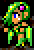 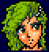 |
| NAME: Rydia |
| OVERVIEW: Rydia is technically a "Caller", and also a Black Mage. She is a Red Mage when she is a child, as she can also cast Cure, Sight, and Hold which are White Magic spells. Rydia has these summons available: Chocb, Mist, Ramuh, Ifrit, Shiva, Levia,Odin, Asura, Titan, Sylph, Bahamut, and various monsters. |
| WEAPONS: Uses staffs and rods best |
| ABILITIES/MAGIC:
Call - Summon a monster to deliver a massive attack
Black - Black magic
|
| ATTRIBUTES: High magic, low strength |
|
| FF5 |
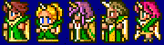
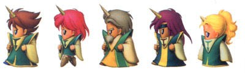 |
| NAME: Summoner |
| OVERVIEW: Summons are earned through AP. Summoner has these summons available: Chocobo, Sylph, Remora, Shiva, Ramuh, Ifrit, Titan, Golem, Shoat, Carbuncl, Odin, Phoenix, Leviathan, Bahamut |
| WEAPONS: Knives, Rods |
| ABILITIES/MAGIC:
!Summon - Cast Summon magic (default)
!Conjure - Summon a random monster for no MP cost
|
| ATTRIBUTES: High magic, low strength |
|
| FF9 |
 |
| NAME: Dagger (A.K.A Garnet Til Alexandros) |
| OVERVIEW: Dagger is also a White Mage. Eidolons are earned through AP on jewels with earnable summons. Dagger has these summons available: Shiva, Ifrit, Ramuh, Atomos, Odin, Leviathan, Bahamut, Ark |
| WEAPONS: Rods |
ABILITIES/MAGIC:
Summon - Summon a powerful monster to deliver a massive attack
White Magic - Cast White Magic
Trance:
Eidolon - Summon a powerful monster to deliver a massive attack every turn for no MP cost
|
| SUPPORT ABILITIES (character specific): Boost, Odin's Sword |
| ATTRIBUTES: High magic power, low strength |
|
| FF9 |
 |
| NAME: Eiko Carol |
| OVERVIEW: Eiko is also a White Mage. Eidolons are earned through AP on jewels with earnable summons. Eiko has these summons available: Carbuncle, Fenrir, Phoenix, Madeen |
| WEAPONS: Flutes |
ABILITIES/MAGIC:
Summon - Summon a powerful monster to deliver a massive attack
White Magic - Cast White Magic
Trance:
Double White - Cast two spells in the same turn |
| SUPPORT ABILITIES (character specific): Boost, Concentrate, Guardian Mog |
| ATTRIBUTES: High magic power, low strength |
|
| FF10 |
 |
| NAME: Yuna |
| OVERVIEW: Yuna is also a White Mage. Aeons are earned throughout the storyline or side-quests. Yuna has these summons available: Valefor, Ifrit, Ixion, Shiva, Bahamut, Yojimbo, Anima, Magus Sisters |
| WEAPONS: Staffs |
ABILITIES/MAGIC:
Pray - Restore minor HP to party at no MP cost
Summon - Summon a monster to fight in place of party
Overdrive:
Grand Summon - Summon a monster to fight in place of party with full overdrive
|
| ATTRIBUTES: High magic, high magic defense, high evasion, low strength, low defense |
|
| FF11 |
  |
| NAME: Summoner |
| OVERVIEW: Avatars are earned by defeating them in battle, except Carbuncle, who is the initial summon. Summons fight along side the party but the Summoner must expend MP to have them do commands, their most powerful being the Astral Flow (similar to an overdrive or limit break). Summoners have these summons available: Carbuncle, Fenrir, Garuda, Ifrit, Leviathan, Ramuh, Shiva, Titan, Diabolos |
| WEAPONS: Uses staffs best |
| ABILITIES/MAGIC:
Astral Flow - Allow avatars to use their full power
|
| SUPPORT ABILITIES: Max MP Boost, Clear Mind, Resist Slow, Auto Refresh |
| ATTRIBUTES: High MP |
|
| FF: Tactics |
 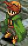 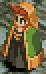 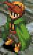 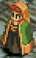 |
| NAME: Summoner |
| OVERVIEW: Summons are learned through AP. |
| WEAPONS: Rod, staff |
ABILITIES/MAGIC:
Summon/Summon Magic (PSX):
Moogle - Heal target's HP
Shiva - Ice attack on target
Ramuh - Lightning attack on target
Ifrit - Fire attack on target
Titan - Earth attack on target
Golem - Takes damage for ally, evades physical attacks
Carbunkle - Reflect magic attacks
Bahamut - Non-elemental attack on target area
Odin - Non-elemental attack in straigh line
Leviathan - Water attack on all enemies
Salamander - Fire attack on all enemies
Sylph/Silf (PSX) - Casts silence on enemy
Faerie/Fairy (PSX) - Restore ally's HP
Lich - Dark attack on target
Cyclops - Area attack on all enemies
Zodiark/Zodiac - Ultima attack on all enemies
Reaction Abilities: Critical: Recover MP/MP Restore (PSX) - Restore MP when terminal
Support Abilities: Halve MP/Half of MP (PSX) - All spells cost 1/2 MP
Move Abilities: None
|
| ATTRIBUTES: High MP, high magic power, low speed, low HP, low evasion, low attack power |
|
| FF: Tactics Advance |
| 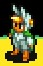 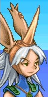 |
| NAME: Summoner |
| OVERVIEW: Summons are really just regular spells with a larger range and have a chance of hurting allies as well. |
| WEAPONS: Staff |
ABILITIES/MAGIC:
Summon Magic:
Unicorn - Heals HP and cures status ailments
Ifrit - Fire damage
Ramuh - Lightning damage
Shiva - Ice damage
Kirin - Cast Regen on area
Carbuncle - Cast Reflect on area
Phoenix - Cast Life on Area
Madeen - Holy damage
Reaction Abilities: None
Support Abilities: Half MP - Spells cost 1/2 MP
Combo: Summon Combo |
| ATTRIBUTES: High MP, high magic power, high magic defense, low attack power, low evasion |
|
| FF: Tactics A2 |
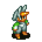 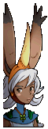  |
| NAME: Summoner |
| OVERVIEW: Identical to the FFTA Summoner. |
| WEAPONS: Staff |
ABILITIES/MAGIC:
Summoning Magick:
Unicorn - Heals HP and cures status ailments
Ifrit - Fire damage
Ramuh - Lightning damage
Shiva - Ice damage
Kirin - Cast Regen on area
Carbuncle - Cast Reflect on area
Phoenix - Cast Life on Area
Maduin - Holy damage
Reaction Abilities: None
Support Abilities: Halve MP - Spells cost 1/2 MP
|
|
Traits of Summoner in Other Games
| FF6: Espers are attached to magicite, which can be equipped by a character. A character can only have one magicite (and thus one summon) at a time, thus any character can summon, but only has a selection of one creature. |
| FF7: Summons are earned through materia and cost MP. |
| FF8: Guardian Forces are equipped like in FF6, but a character can have as many GF's as possible. They do not cost money, but instead, when summoned, the characters HP is replaced by the GF's HP, and the ally can make no action until the summon is complete. If the GF's HP goes down to zero, the summon is cancelled and the GF can't be summoned again until it is revived. The time of the summon spell is determined by the character's compatibility with that GF, which is influenced by how frequently a character uses a particular GF. |
| FFTA: Animist has the "Friend" ability which calls a random summon. |
Final Fantasy, all games and animation bearing the Final Fantasy name, and all characters in said games or animation are copyright their respective creators, including but not limited to Squaresoft, Square Enix, Square EA, Tokyo TV, and ADV Films.
 Characters
Characters Places
Places Stories
Stories Species
Species Organizations
Organizations Glossary
Glossary Transportation
Transportation Monsters
Monsters Jobs
Jobs Summons
Summons Items
Items Magic/Skills
Magic/Skills Weapon Types
Weapon Types In-Crossovers
In-Crossovers Ex-Crossovers
Ex-Crossovers Release Dates
Release Dates Name Origins
Name Origins Famous Moments
Famous Moments Music Database
Music Database Features
Features Game Help
Game Help Game Evolution
Game Evolution Square Art
Square Art Fan Flash
Fan Flash Final Fantasy Forums
Final Fantasy Forums Updates
Updates Site Info
Site Info Feedback
Feedback Full Index
Full Index Links
Links Staff
Staff